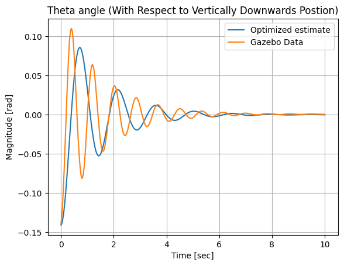
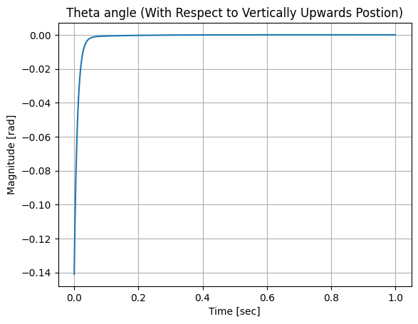

Linear System Identification for Inverted Pendulum Using Convex Optimization
A Brief Synopsis
The inverted pendulum system possesses two equilibrium points: a stable equilibrium when the pendulum is vertically downward, and an unstable equilibrium when it is vertically upward. In this study, system identification is carried out for both configurations. The unstable equilibrium, in particular, necessitates continuous control input to maintain balance, which introduces additional complexity to the optimization problem. Accordingly, a Linear Quadratic Controller is designed to control the pendulum and results for both cases are shown below. The true states of the non-linear inverted pendulum system are derived from Gazebo. Python’s casADi package is used to solve the optimization problem.
1. State space representation
The state vector consisting of theta (pendulum’s angle from the vertical), theta_dot, cart position, and cart velocity is shown below. \[ \begin{equation} \label{eq:state_vector} \vec{x} = \begin{bmatrix} \text{cart position } (x) \\ \text{pendulum angle } (\theta) \\ \text{cart velocity } (\dot{x}) \\ \text{pendulum angular velocity } (\dot{\theta}) \end{bmatrix} \end{equation} \]
The corresponding state space system consisting of the A, B, C, D matrices is shown below.
\[ \begin{equation} \label{eq:inverted_pendulum_ss} \begin{aligned} \dot{\vec{x}} &= \begin{bmatrix} \dot{x} \\ \dot{\theta} \\ \ddot{x} \\ \ddot{\theta} \end{bmatrix} = \begin{bmatrix} a_{11} & a_{12} & a_{13} & a_{14} \\ a_{21} & a_{22} & a_{23} & a_{24} \\ a_{31} & a_{32} & a_{33} & a_{34} \\ a_{41} & a_{42} & a_{43} & a_{44} \end{bmatrix} \vec{x} + \begin{bmatrix} b_{11} \\ b_{21} \\ b_{31} \\ b_{41} \end{bmatrix} F \\[1.5ex] y &= \begin{bmatrix} c_{11} & c_{12} & c_{13} & c_{14} \\ c_{21} & c_{22} & c_{23} & c_{24} \\ c_{31} & c_{32} & c_{33} & c_{34} \\ c_{41} & c_{42} & c_{43} & c_{44} \end{bmatrix} \vec{x} + \begin{bmatrix} d_{11} \\ d_{21} \\ d_{31} \\ d_{41} \end{bmatrix} F \end{aligned} \end{equation} \]
2. Stable Equilibrium
The optimization problem solved to determine the state space system for stable equilibrium is shown below.
\[ \begin{equation} \begin{aligned} \min_{A \in \mathbb{R}^{4 \times 4}, \; B \in \mathbb{R}^{4 \times 1}} \quad & \sum_{i=1}^{N-1} e_i^T Q e_i \\ \textbf{subject to:} \quad & e_i = x_{i+1}^{\text{true}} - \left( x_i + \Delta t_i (A x_i + B u_i) \right) \\ & -40 \leq a_{ij} \leq 40, \quad \forall i,j \in \{1,2,3,4\} \\ & -40 \leq b_{j} \leq 40, \quad \forall j \in \{1,2,3,4\} \end{aligned} \end{equation} \]
The results are shown below.
\[ \text{Estimated } A = \begin{bmatrix} 0.028 & 0.018 & 0.029 & -0.14 \\ 0.069 & -0.15 & 4.10 & -40.0 \\ 0.42 & -0.015 & -0.92 & 3.85 \\ -0.020 & 0.48 & 0.019 & -0.84 \end{bmatrix} \]
\[ \text{Estimated } B = \begin{bmatrix} 0.019 \\ -0.011 \\ 0.86 \\ -3.70 \end{bmatrix} \]
\[ \text{Cost: } 0.0817\% \]
\[ \text{Solver status: Solve\_Succeeded} \]
\[ \text{Iteration count: } 9 \]
\[ \text{Time: } 0.1 \text{ sec} \]
In order to validate the determined system, the free swinging motion of the pendulum at stable equilibrium is analyzed. A pertubation of -0.14 rad is applied to both the linear system and the non linear system in Gazebo and results are shown below.

3. Unstable Equilibrium
The optimization problem for the unstable equilibrium is shown below. Additional constraints are added to ensure the stability of the closed loop matrix. This is done using Lyapunov’s stability criteria and enforcing this through Sylvester’s criterion.
\[\begin{align} \min_{A \in \mathbb{R}^{4 \times 4},\; B \in \mathbb{R}^{4 \times 1}} \quad & \sum_{i=1}^{N-1} e_i^TQe_i \end{align}\]
\[ \textbf{subject to:} \] \[\begin{align} e_i = \left( x_{i+1}^{\mathrm{true}} - \left(x_i + \Delta t_i (A x_i + B u_i)\right) \right)^\top \nonumber \\ \det \begin{bmatrix} a_{11} \end{bmatrix} &\leq \epsilon \\[1ex] % \det \begin{bmatrix} a_{11} & \frac{a_{12} + a_{21}}{2} \\ \frac{a_{12} + a_{21}}{2} & a_{22} \end{bmatrix} &\geq \epsilon \\[1ex] % \det \begin{bmatrix} a_{11} & \frac{a_{12} + a_{21}}{2} & \frac{a_{13} + a_{31}}{2} \\ \frac{a_{12} + a_{21}}{2} & a_{22} & \frac{a_{23} + a_{32}}{2} \\ \frac{a_{13} + a_{31}}{2} & \frac{a_{23} + a_{32}}{2} & a_{33} \end{bmatrix} &\leq \epsilon \\[1ex] % \det \begin{bmatrix} a_{11} & \frac{a_{12} + a_{21}}{2} & \frac{a_{13} + a_{31}}{2} & \frac{a_{14} + a_{41}}{2} \\ \frac{a_{12} + a_{21}}{2} & a_{22} & \frac{a_{23} + a_{32}}{2} & \frac{a_{24} + a_{42}}{2} \\ \frac{a_{13} + a_{31}}{2} & \frac{a_{23} + a_{32}}{2} & a_{33} & \frac{a_{34} + a_{43}}{2} \\ \frac{a_{14} + a_{41}}{2} & \frac{a_{24} + a_{42}}{2} & \frac{a_{34} + a_{43}}{2} & a_{44} \end{bmatrix} &\geq \epsilon \\[2ex] % \quad -100 \leq a_{ij} \leq 100, \quad & \forall i,j \in \{1,2,3,4\} \\[1ex] -100 \leq b_{j} \leq 100, \quad & \forall j \in \{1,2,3,4\} \end{align}\]
The results of the optimization problem are shown below.
\[ \text{Estimated } A = \begin{bmatrix} -1.10 & 0.39 & 1.33 & -3.84 \\ 19.83 & -99.37 & -38.58 & 48.25 \\ 3.33 & -1.37 & -5.36 & 8.72 \\ -0.54 & 0.54 & 0.93 & -2.85 \end{bmatrix} \]
\[ \text{Estimated } B = \begin{bmatrix} 0.2319 \\ -1.1449 \\ 0.4511 \\ 4.6471 \end{bmatrix} \]
\[ \text{Cost: } 0.2011\% \]
\[ \text{Solver status: Solve\_Succeeded} \]
\[ \text{Iteration count: } 89 \]
\[ \text{Time: } 0.5 \ \text{sec} \]
The open loop response for a similar pertubation of -0.14 rad is shown below. As expected, the linear state space system does not show the free swining motion because the model is only valid at the unstable equilibrium.
